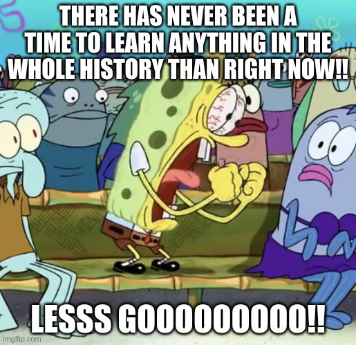

Overview

Am I an AI research expert...no, have I ever trained a Large language model...I can't afford it...do i have 10+ years experience in Machine Learning...ehm no.
But I have PASSION, a VISION, AGGRESION *with There is no passion meme voice* plus I believe in just randomly throwing myself into things that I don't know its the best way to learn...well anything, you probably did too once like when you were learning how to walk as a baby. Besides there is no time to learn anything in the entire history of humanity thanks to GPT (Our lord and saviour) so might as well take advantage and just combine Mr Douglas Hofstadter's analysis ( book title : Analogy as the Fuel and Fire of Thinking (A must read btw)) to learn anything with GPT.
Papers
Improving Factuality and Reasoning in Language Models through Multiagent Debate

More like a group of friends trying to solve a puzzle. Each friend comes up with a piece of the solution. They then discuss their pieces, learn from each other, and adjust their pieces until they all fit together to solve the puzzle. This is what the language models do in the multiagent debate system - they share, learn, and adjust until they agree on the best answer.
View Full Paper
Learning to Plan in High Dimensions via Neural Exploration-Exploitation Trees
If The ocean represents the high-dimensional space, and your ship is the algorithm trying to find the best route. You could chart your course randomly, but the ocean is vast and full of dangers like storms and reefs (complex problems). Now if you had an enchanted astrolabe( NEXT algorithm ) that not only maps the stars (problem structures) but also remembers the routes of all past voyages (prior experiences). This astrolabe doesn't just replicate the old routes; it learns from them, understanding which currents were beneficial, where the hidden reefs are, and when storms are likely to occur. It then uses this knowledge to chart the most efficient and safe course through the ocean.
View Full Paper
Topology of Learning in Artificial Neural Networks
Aight, let's break it down. Imagine you're playing with a bag of marbles, each marble representing a neuron's weight in a neural network. At first, you just dump them on the floor, they scatter randomly, no pattern, no structure. But as you start training the network, it's like you're slowly moving these marbles around, grouping some together, pushing others apart. Over time, you start to see patterns, clusters of marbles here, a line of marbles there. You're not measuring the exact positions, but you're noticing the overall shape they're forming. That's what this paper is doing, but with the weights in a neural network. It's looking at how these weights, these marbles, move around and form patterns as the network learns.
View Full Paper
Forward Thinking: Building Deep Random Forests
Forward thinking is deep learning that extends the architectural flexibility and sophisticationof deep neural networks. It allows for different types of learning functions in the network, other than neurons, and the ability to adaptively deepen the network as needed to improve results.
View Full Paper
Textbooks are all you need.
So E2E is basically similar to learning to navigate a new city wandering around aimlessly, learning through pure exploration. might be efficient but too consuming. paper proposes a textbook approach like using a well-structured map or GPS, guiding you from point A to B efficiently. The paper argues that in certain scenarios, the map (structured, hierarchical learning) can be more efficient than aimless wandering (end-to-end learning).
View Full Paper